Bhavika Tekwani
Technologist, also human.
CS682: Computer Vision (Spring 2018)
Assignment 2
Code Report| # 1.1 Questions 1, 2 and 3 | 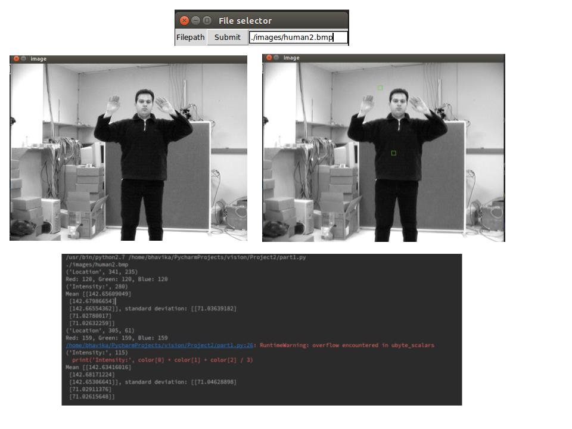human2.bmp | 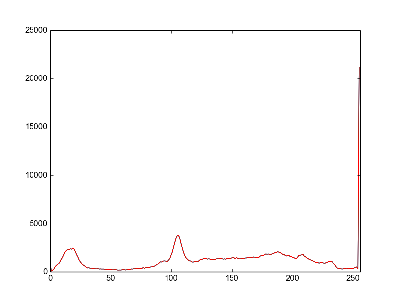Histogram | |
| human2.tif | 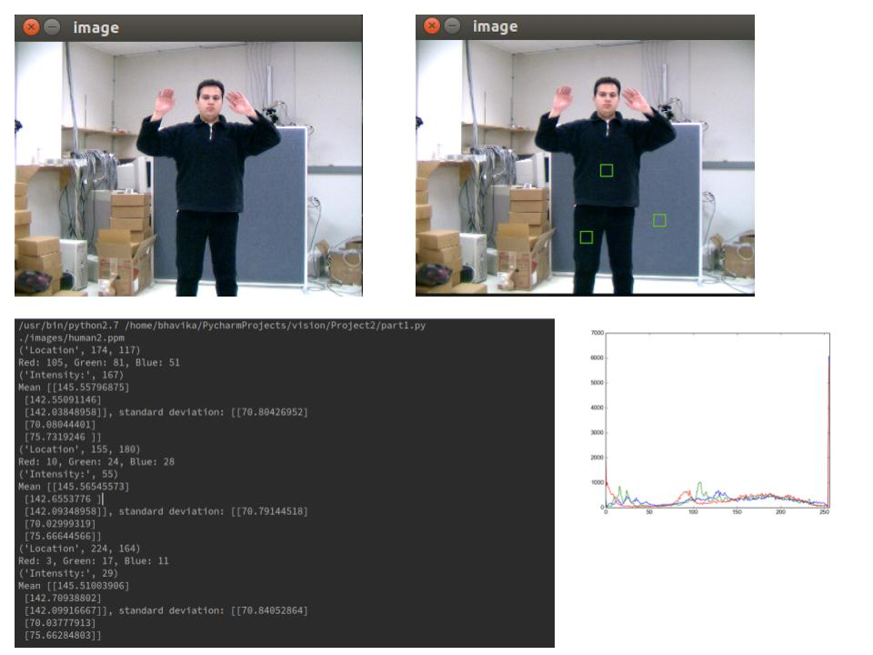 | 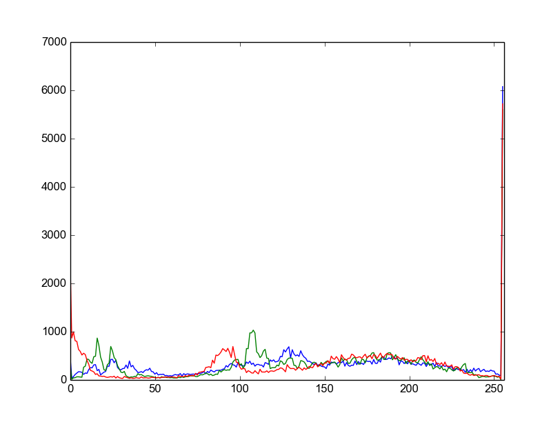 | |
| human2.ppm | 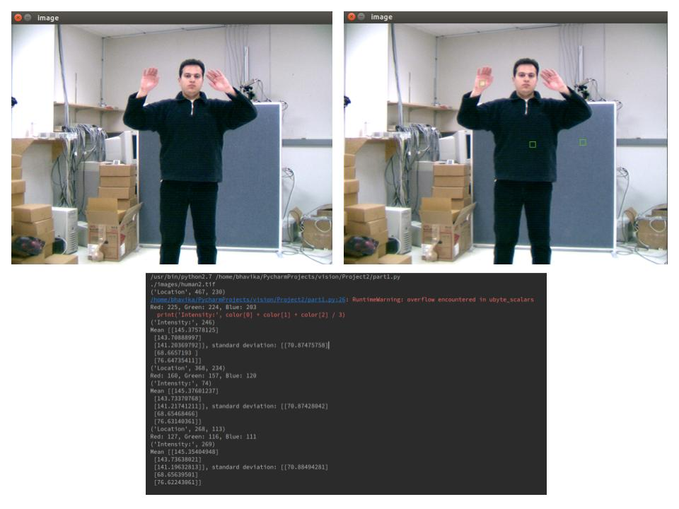 | 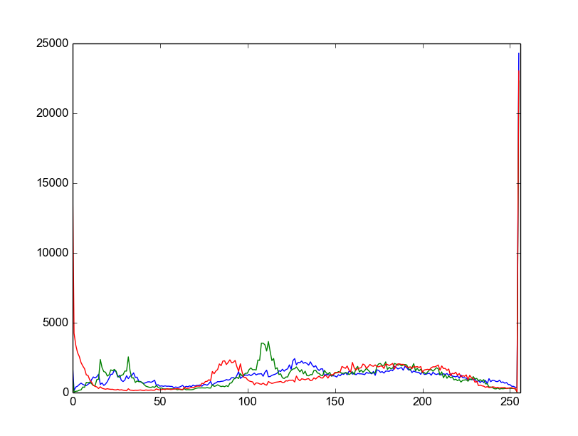 | |
| image1.jpeg | 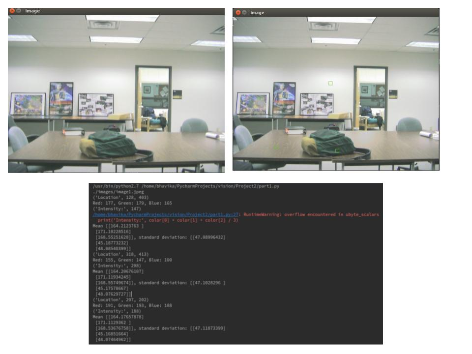 | 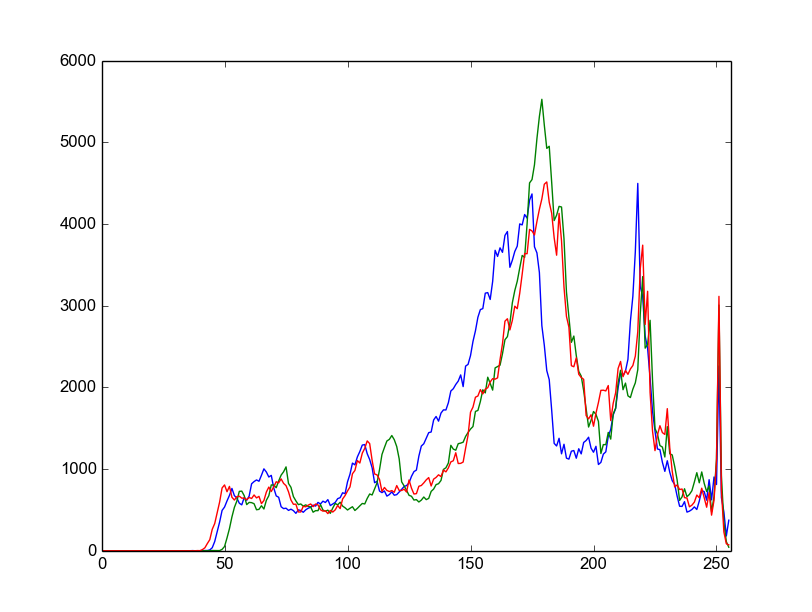 | |
# 1.1 Question 4 Consider the following image - image1.jpeg. I have selected 3 windows (shown in green) that can be seen in the second “framed” poster from the left in the image. As we can see, the overall colors in that area seem to be mostly white or grey. I select 3 pixels - (147, 232), (158, 251) and (141, 264) which are quite close to each other. Then, I draw windows around them of size 11 * 11. From the calculated RGB values of those pixels, the average mean of RGB is 164 for red, 171 for green and 168 for blue in all 3 windows. Similarly, standard deviation for each channel also does not vary much in those 3 windows. We can say that those 3 windows are homogenous because the variation in mean of the windows is not much. However, if we were to select a window on the desk or bag area, we get drastically different means & standard deviations. Therefore, homogeneity between windows close to each other is greater than that between windows well separated from each other. 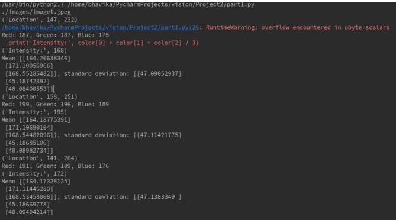 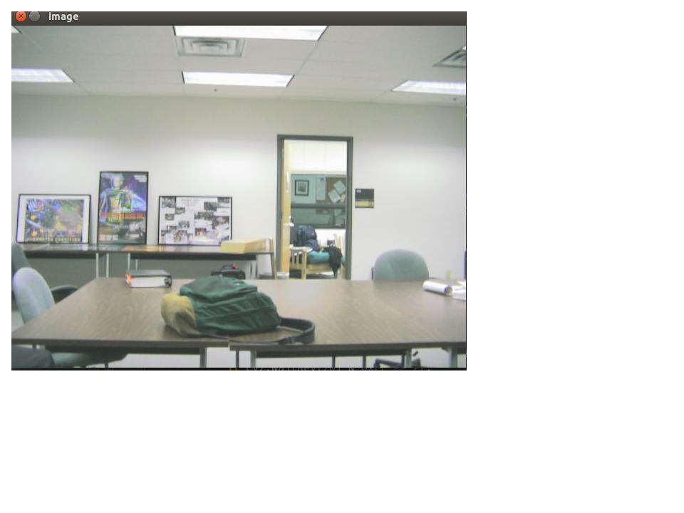
# 1.2 Histogram Intersection & Chi Square Measure
 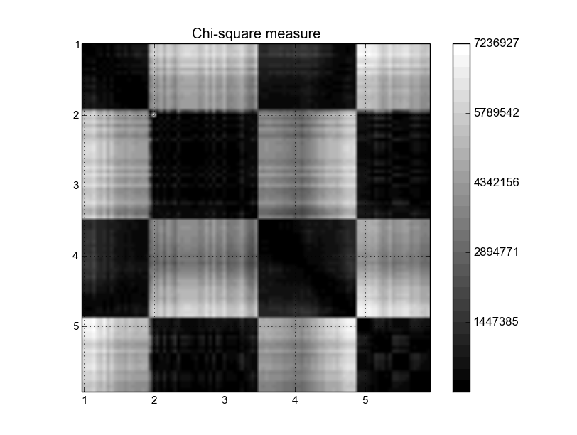
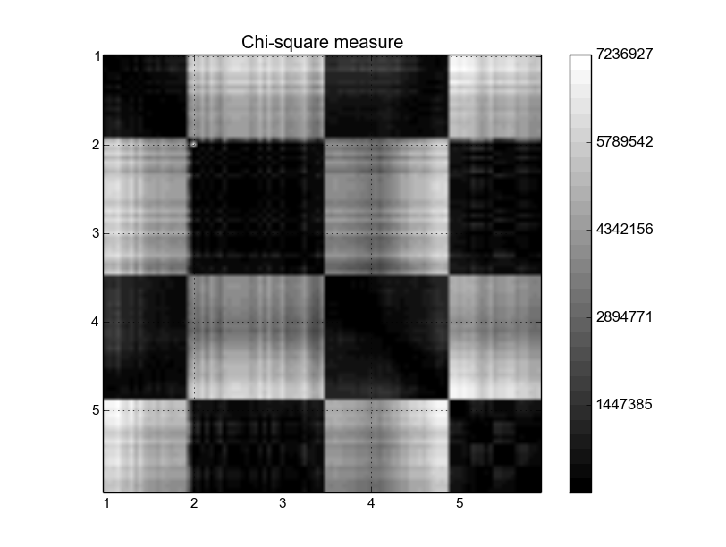